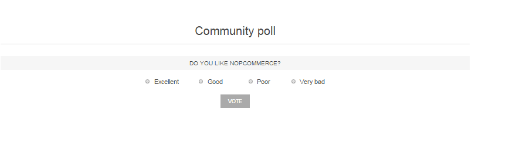
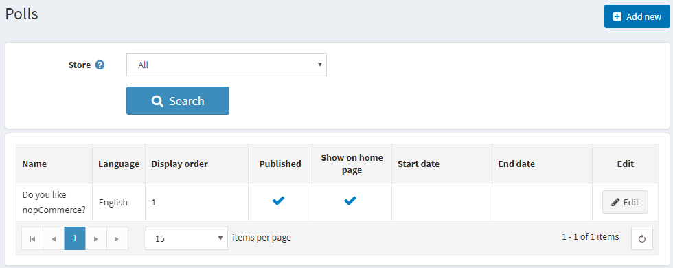
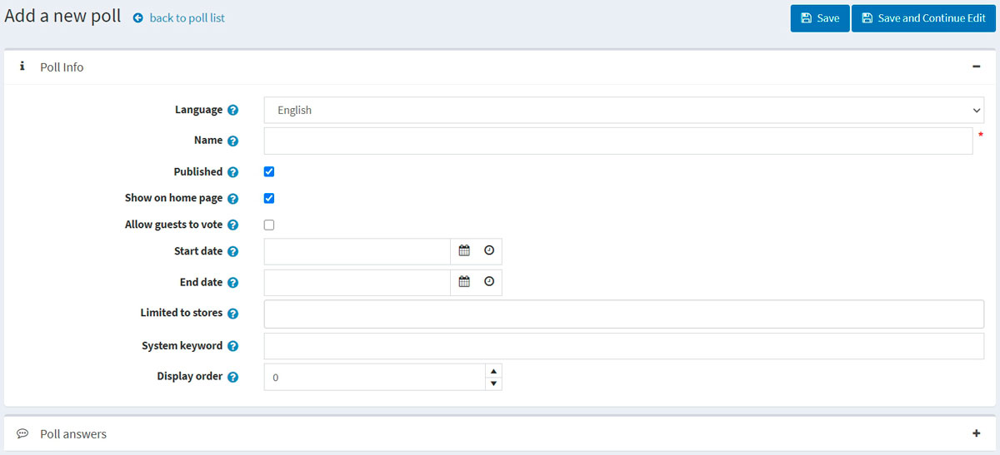
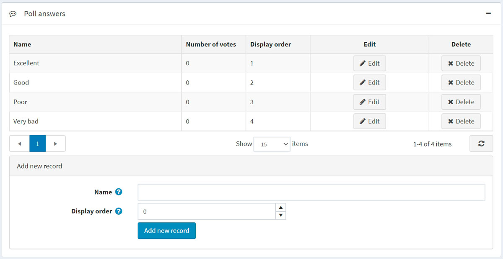

民意調查
nopCommerce 的民意調查功能讓您可以使電子商務網站更具互動性。您可以透過許多方式在電子商務網站中使用民意調查。一種常見的方法是將其作為簡短的顧客滿意度調查。人們喜歡被詢問意見，這是一個檢視您作為線上商家表現如何的好機會。
Default Clean nopCommerce 佈景主題首頁上的民意調查看起來像這樣：

若要檢視所有民意調查並新增調查，請前往 內容管理 → 民意調查。

若要搜尋在特定商店中使用的民意調查，請從清單中選擇商店名稱。
新增民意調查
若要新增民意調查，請點擊右上角的 新增 按鈕。

民意調查資訊
為新的民意調查定義以下詳細資料：
如果啟用了多種語言，請從 語言 下拉式清單中選擇此民意調查的語言。顧客只會看到他們所選語言的民意調查。
輸入此民意調查的說明性 名稱。這是顧客將看到的文字。例如：「您覺得我們的商店如何？」
勾選 已發布 核取方塊以啟用此民意調查。
如果您想在首頁顯示該民意調查，請勾選 在首頁顯示民意調查 核取方塊。
勾選 允許訪客投票 核取方塊，以允許未註冊的使用者參與民意調查。
以協調世界時間 (UTC) 輸入 開始日期 和 結束日期。
Note
如果您不想定義民意調查的開始與結束日期，可以將這些欄位留空。
在 限制商店 欄位中選擇商店，以僅針對特定商店啟用此民意調查。如果不需此功能，請將該欄位留空。
Note
若要使用此功能，您必須停用以下設定：目錄設定 → 忽略「依商店限制」規則 (全站)。閱讀更多關於多商店功能的內容 here。
在 系統關鍵字 欄位中，您可以指定民意調查的顯示位置。例如：LeftColumnPoll。
輸入民意調查的 顯示順序。數值 1 代表位於清單最上方。
點擊 儲存並繼續編輯 以進入 民意調查答案 面板。
民意調查答案
填寫以下民意調查答案資訊：
- 將顯示給顧客的 名稱。
- 顯示順序。數值 1 代表位於清單最上方。
然後點擊 新增記錄 按鈕來儲存答案。
完整的答案清單可能如下所示：

隨後，您可以根據需要 編輯 或 刪除 記錄。